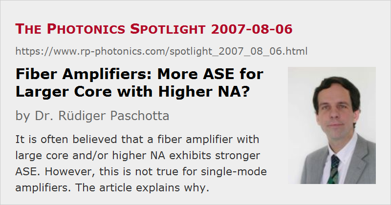

Fiber Amplifiers: More ASE for Larger Core with Higher NA?
Posted on 2007-08-06 as a part of the Photonics Spotlight (available as e-mail newsletter!)
Permanent link: https://www.rp-photonics.com/spotlight_2007_08_06.html
Author: Dr. Rüdiger Paschotta, RP Photonics Consulting GmbH
Abstract: It is often believed that a fiber amplifier with large core and/or higher NA exhibits stronger ASE. However, this is not true for single-mode amplifiers. The article explains why.

Ref.: encyclopedia articles on amplified spontaneous emission and fiber amplifiers
There are models for calculating the power of amplified spontaneous emission (ASE) in a fiber amplifier, which are using a kind of “capture fraction” for spontaneous emission. The idea is simple: spontaneous emission goes in all directions, and only some fraction of the total power, which goes into a certain cone around the fiber axis, will be guided, because all other light either has a too large angle of incidence at the core/cladding interface to experience total internal reflection, or simply travels in backward direction. So one expects a higher ASE power for an active fiber with higher numerical aperture (NA), and also for fibers with large core area.
Although all this looks pretty reasonable, the application of such a model to a single-mode fiber is totally wrong, and this is often overlooked. If the fiber is single-mode, and for simplicity we consider a loss-less fiber with a four-level gain medium (as for a neodymium-doped fiber), the power spectral density of ASE depends only on the magnitude of the generated gain. This means that if you slowly increase the core diameter or the NA, the ASE power stays constant as long as single-mode guidance is preserved! At that point, you get a jump in ASE power, as in a multimode fiber the above statement applies to very single mode. As you go to a strongly multimode fiber, you get into a regime where the above mentioned capture fraction model becomes a good approximation.
So what is the problem with that model in single-mode or few-mode situations? It is of course that effectively one uses a simple ray picture, disregarding the wave nature of light. What also helps is of course a basic knowledge of quantum noise phenomena.
This article is a posting of the Photonics Spotlight, authored by Dr. Rüdiger Paschotta. You may link to this page and cite it, because its location is permanent. See also the RP Photonics Encyclopedia.
Note that you can also receive the articles in the form of a newsletter or with an RSS feed.
Questions and Comments from Users
Here you can submit questions and comments. As far as they get accepted by the author, they will appear above this paragraph together with the author’s answer. The author will decide on acceptance based on certain criteria. Essentially, the issue must be of sufficiently broad interest.
Please do not enter personal data here; we would otherwise delete it soon. (See also our privacy declaration.) If you wish to receive personal feedback or consultancy from the author, please contact him e.g. via e-mail.
By submitting the information, you give your consent to the potential publication of your inputs on our website according to our rules. (If you later retract your consent, we will delete those inputs.) As your inputs are first reviewed by the author, they may be published with some delay.
|  |
If you like this page, please share the link with your friends and colleagues, e.g. via social media:
These sharing buttons are implemented in a privacy-friendly way!